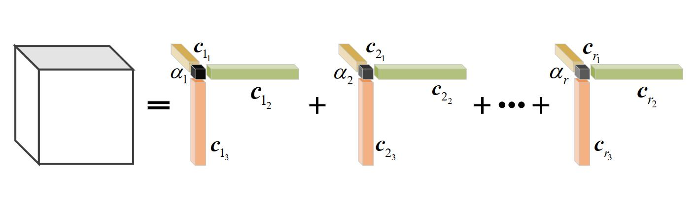
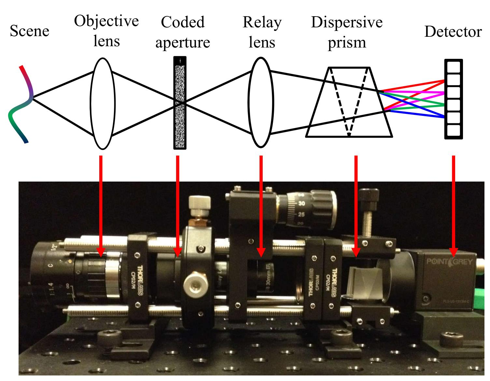

|
Lizhi Wang (王立志)
Associate Professor, PH.D. Advisor
Visula Media Computing Lab, School of Computer Science and Technology |
Beijing Institute of Technology, Beijing 100081, China |
Email: wanglizhi@bit.edu.cn
|
| Opportunity! Our team is recuriting qualified Faculties/Postdocs and self-motivated Ph.D./M.D. students, with
research interests on Computational Photography, Computer Vision, Image Processing, Optical Engineering, Artificial Intelligence, VR/AR.
Candidates please send CV to me.[欢迎加入] |
|
| Adaptive Dimension-Discriminative Low-Rank Tensor Recovery for Computational Hyperspectral Imaging |
| Lizhi Wang, Shipeng Zhang, Hua Huang. |
| IJCV, 2021 |
| [Paper][Code] |
|
 |
| Learning Tensor Low-Rank Prior for Hyperspectral Image Reconstruction |
| Shipeng Zhang, Lizhi Wang*, Lei Zhang, Hua Huang. |
| CVPR, 2021 |
| [Paper][Code] |
|
|
| High light efficiency snapshot spectral imaging via spatial multiplexing and spectral mixing |
| Maoqing Zhang, Lizhi Wang*, Lei Zhang, Hua Huang. |
| Optics Express, 2020 |
| [Paper] |
|
|
| DNU: deep non-local unrolling for computational spectral imaging |
| Lizhi Wang, Chen Sun, Maoqing Zhang, Ying Fu, Hua Huang. |
| CVPR, 2020 |
| [Paper][Code] |
|
|
| Computational hyperspectral imaging based on dimension-discriminative low-rank tensor recovery |
| Shipeng Zhang, Lizhi Wang*, Ying Fu, Xiaoming Zhong, Hua Huang. |
| ICCV, 2019 |
| [Paper] |
|
 |
| Hyperspectral image reconstruction using a deep spatial-spectral prior |
| Lizhi Wang, Chen Sun, Ying Fu, Min H. Kim, Hua Huang. |
| CVPR, 2019 |
| [Paper] |
|
|
| Hyperreconnet: Joint coded aperture optimization and image reconstruction for compressive hyperspectral imaging |
| Lizhi Wang, Tao Zhang, Ying Fu, Hua Huang. |
| TIP, 2019 |
| [Paper][Code] |
|
|
| High-speed hyperspectral video acquisition by combining nyquist and compressive sampling |
| Lizhi Wang, Zhiwei Xiong, Hua Huang, Guangming Shi, Feng Wu, Wenjun Zeng. |
| TPAMI, 2019 |
| [Paper] |
|
|
| Adaptive Nonlocal Sparse Representation for Dual-Camera Compressive Hyperspectral Imaging |
| Lizhi Wang, Zhiwei Xiong, Guangming Shi, Feng Wu, Wenjun Zeng. |
| TPAMI, 2017 |
| [Paper] |
|
|
| Snapshot hyperspectral light field imaging |
| Zhiwei Xiong, Lizhi Wang, Huiqun Li, Dong Liu, Feng Wu. |
| CVPR, 2017 |
| [Paper] |
|
|
| Simultaneous depth and spectral imaging with a cross-modal stereo system |
| Lizhi Wang, Zhiwei Xiong, Guangming Shi, Wenjun Zeng, Feng Wu. |
| TCSVT, 2017 |
| [Paper] |
|
|
| High-speed hyperspectral video acquisition with a dual-camera architecture |
| Lizhi Wang, Zhiwei Xiong, Dahua Gao, Guangming Shi, Wenjun Zeng, Feng Wu. |
| CVPR, 2015 |
| [Paper] |
|
|